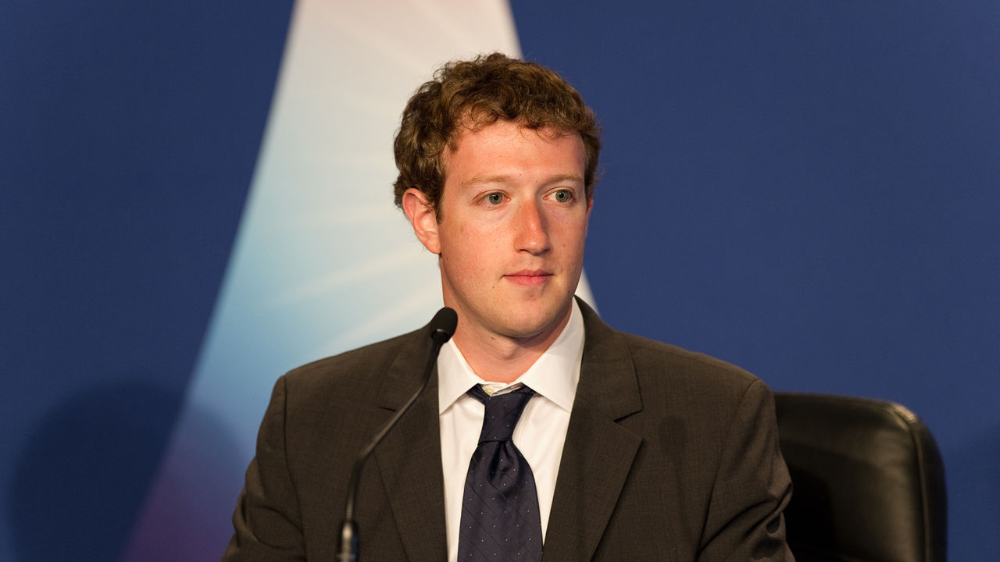

Mark Zuckerberg is co-founder and CEO of the social-networking website Facebook, as well as one of the world's youngest billionaires.
"By giving people the power to share, we're making the world more transparent."
Mark Elliot Zuckerberg (born May 14, 1984) is an American billionaire business magnate, computer programmer, internet entrepreneur, and philanthropist. He co-founded the social media website Facebook and its parent company Meta Platforms (formerly Facebook, Inc.), of which he is executive chairman, chief executive officer, and controlling shareholder. In 2015, his net worth was estimated at $35.7 billion. But the fact that he is one of the youngest billionaires is the less interesting one. The cool stuff here is actually his start up story, describing how a kid became the founder and later the manager of one of the most influential websites on Earth. Below is the amazing story of this young entrepreneur and his creation – Facebook.
Mark began writing software and using computers when he was in middle school. His coding experience began with learning Atari basic programming, with the help of his father. But he was learning so fast, that daddy needed to hire a professional developer to tutor him. David Newman was the man, who was given the task to mentor the young Mark. It was a tough task for the teacher, because the student was developing his skills so quickly, that Newman experienced serious difficulties to stay ahead of him. At high school Mark excelled in his classes he won prizes in astronomy, physics, and mathematics. While he was still in high school, he took a college graduate program in computer programming. He built a program called Zucknet where the computer at home could communicate with his father’s computer at his dental practice. He also used his creativity to build computer games often out of ideas his friends would draw for him. When he eventually went to go to college, he claimed to be able to read and write in Latin, French, Hebrew, English and Greek. His overall knowledge and intelligence helped him excel at college, where he would often recite poems such as the epic ‘The Iliad’.